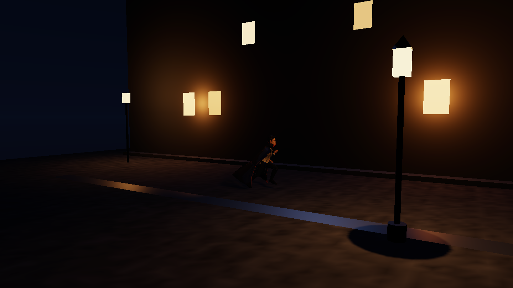
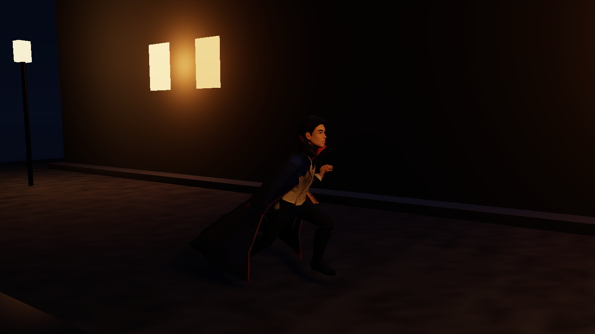
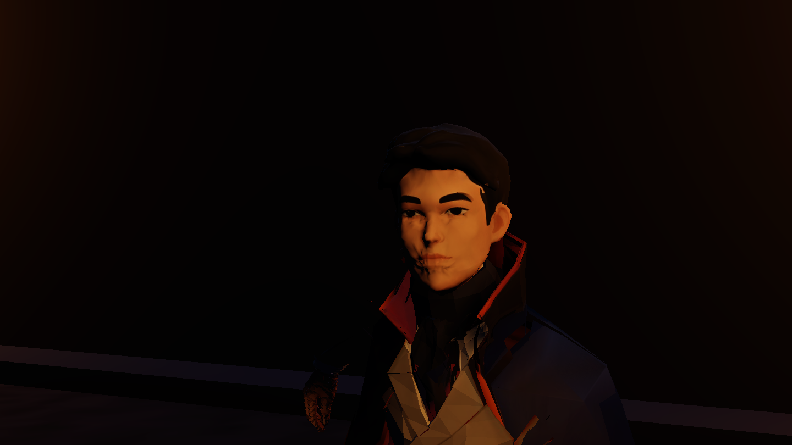
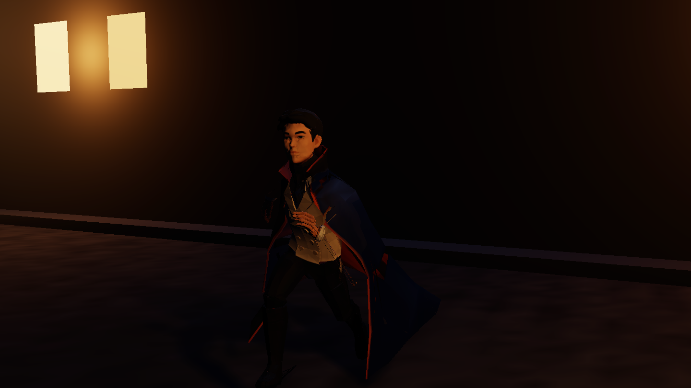
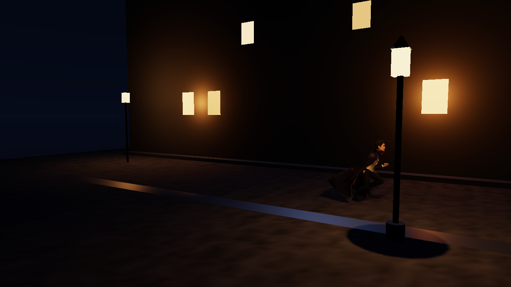
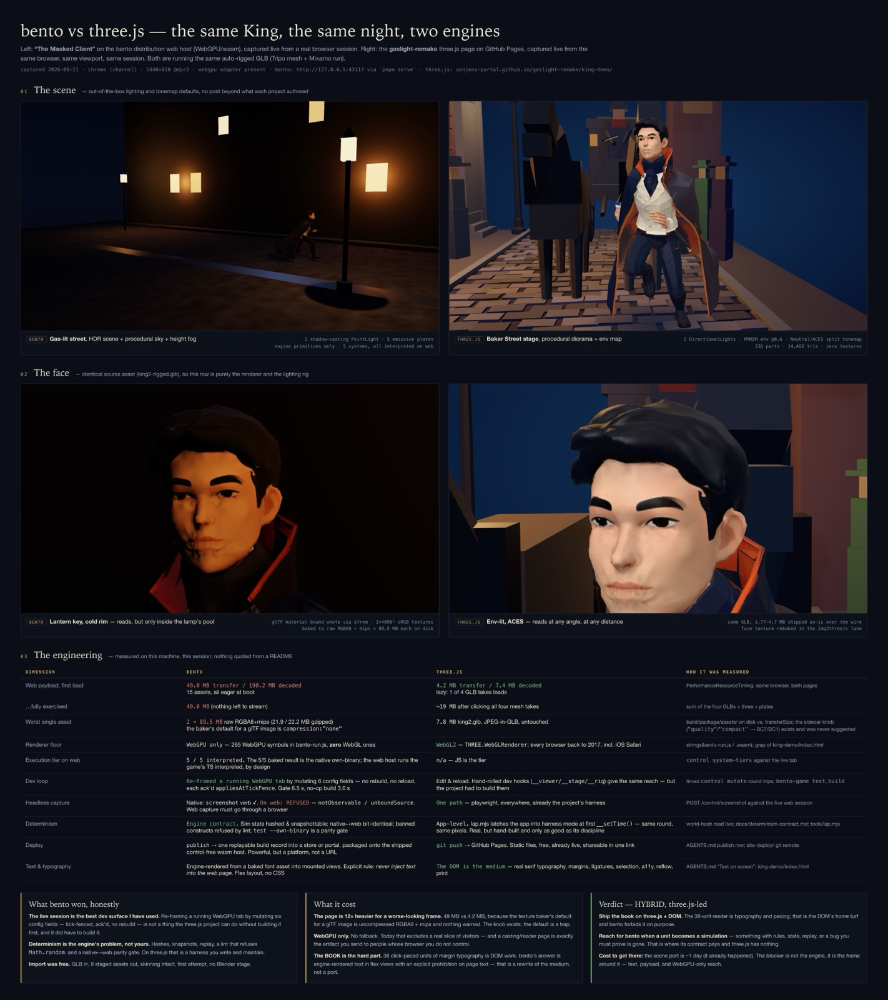

The same King, the same night, built a second time on a different engine — bento, a data-oriented ECS engine that runs the game as typed data on a prebuilt WebGPU/wasm host. Not a rewrite of the book: a port of one scene, taken far enough to measure what the trade actually costs. Below are the frames it produced, the side-by-side sheet against the three.js page this site already ships, and the verdict — with numbers, not impressions.
Five frames from one live session, driven over the engine's control plane — paused, stepped, framed by mutating config fields — and captured through its own screenshot verb. Engine primitives only — no imported set geometry: one shadow-casting point light in the lamp, five emissive plates for the windows, procedural sky and height fog. The character is the same auto-rigged GLB the three.js page loads (Tripo mesh + a stock Mixamo run), imported once and staged as nine assets with its skinning intact.





Both engines captured live, in the same browser, at the same viewport, in the same session — the left column bento on its WebGPU/wasm host, the right column this site's own three.js King demo on GitHub Pages. The face row is the strictest comparison available: identical source asset, so what differs is purely the renderer and its lighting rig. Click to enlarge — the full sheet is legible at 3416 × 3844.

Everything below was measured on one machine in one session — nothing quoted from a README. The payload figures are PerformanceResourceTiming over both pages in the same browser.
| Dimension | bento | three.js | How it was measured |
|---|---|---|---|
| Web payload, first load | 49.0 MB transfer / 190.2 MB decoded 15 assets, all eager at boot |
4.2 MB transfer / 7.4 MB decoded lazy — 1 of 4 GLB takes loads |
PerformanceResourceTiming, same browser, both pages |
| …fully exercised | 49.0 MB (nothing left to stream) | ~19 MB after clicking all four takes | sum of the four GLBs + three + plates |
| Worst single asset | 2 × 89.5 MB raw RGBA8 + mips (21.9 / 22.2 MB gzipped) — 4096² decoded out of the GLB, and uncompressed is the only bake the glTF path offers |
7.8 MB king2.glb, JPEG-in-GLB, untouched | staged package on disk vs. transferSize; the block-compression knob was then chased through the toolchain — see §4 |
| Renderer floor | WebGPU only — 87 distinct WebGPU symbols across the host, and zero occurrences of "webgl" | WebGL2 — every browser back to 2017, incl. iOS Safari | case-insensitive symbol grep over the emitted host JS vs. the demo page |
| Execution tier on web | 5 / 5 interpreted | n/a — JS is the tier | control system-tiers against the live tab |
| Determinism | Engine contract — parity gate green: 240 ticks, 5 samples, identical world-hash trajectories, own native binary (5/5 baked) vs. stock host (interpreted) | App-level. A hand-rolled harness latch — real, but only as good as its discipline | pnpm test --own-binary, re-run for this page; tools/lap.mjs on the three.js side |
| Dev loop | Re-framed a running WebGPU tab by mutating 6 config fields — no rebuild, no reload, each ack'd appliesAtTickFence |
Edit & reload. Hand-rolled dev hooks give the same reach — but the project had to build them | timed control mutate round trips; gate 6.5 s, no-op build 3.0 s |
| Headless capture | Native screenshot ✓. On web REFUSED — notObservable / unboundSource |
One path — Playwright, everywhere, already this project's harness | POST /control/screenshot against the live web session |
| Text & typography | Engine-rendered from a baked font asset into mounted views. Explicit rule: never inject text into the web page | The DOM is the medium — real serif typography, margins, ligatures, selection, a11y, reflow, print | the engine's own authoring contract vs. king-demo/index.html |
| Deploy | publish → one replayable build record into a store or portal, packaged onto the shipped control-free wasm host |
git push → GitHub Pages. Static files, free, already live, shareable in one link |
the publish report emitted for this page (below) |
The live session is the best dev surface I have used. Re-framing a running WebGPU tab by mutating six config fields — tick-fenced, ack'd, no rebuild — is not a thing the three.js project can do without building it first, and it did have to build it.
Determinism is the engine's problem, not yours. Hashes, snapshots, replay, and a lint
that refuses Math.random, with a native↔web parity gate on top. On three.js that is
a harness you write and maintain.
Import was free. GLB in, nine staged assets out, skinning intact, first attempt, no Blender stage.
The page is 12× heavier for a worse-looking frame. 49 MB against 4.2 MB, because a glTF-embedded image bakes to uncompressed RGBA8 + mips — and, as §4 shows, that is not a default you can turn off but the only bake that path offers.
WebGPU only. No fallback — that excludes a real slice of visitors today, and a casting page is exactly the artifact you send to people whose browser you do not control.
The book is the hard part. Its 38 click-paced units are margin typography, which is DOM work. bento's answer is engine-rendered text in flex views with an explicit prohibition on page text — that is a rewrite of the medium, not a port.
Ship the book on three.js + DOM. The 38-unit reader is typography and pacing; that is the DOM's home turf, and bento forbids it on purpose.
Reach for bento when a unit becomes a simulation — something with rules, state, replay, or a bug you must prove is gone. That is where its contract pays and three.js has nothing.
Cost to get there: the scene port is ~1 day — it already happened. The blocker is not the engine, it is the frame around it: text, payload, and WebGPU-only reach.
The engine's publish verb was run for this page, and it worked: it rebuilt the
game's own shipping web tree and emitted one replayable build record —
191,990,085 bytes across 30 content-addressed blobs
(5.55 MB of wasm host, 637 KB of code bundle,
184.5 MB of assets). The emitted tree is a genuinely static,
control-free web host, and it is subpath-safe — every runtime fetch in the host page is
relative (package-identity.json, index.js, the wasm subject); the only
leading-slash paths in it are writes into the in-memory filesystem, not URLs. Dropped under
/gaslight-remake/king-demo/bento/play/ it would have resolved correctly.
It was not shipped, and the reason is a number. The servable tree is 195.0 MB on disk (194,950,099 bytes), of which 179.0 MB is two texture blobs of 89.5 MB each — the same uncompressed RGBA8 + mips the table above names. That is far past what belongs in a Pages repo (each blob also sits just under GitHub's 100 MB per-file hard limit), for a page that would then be WebGPU-only anyway. The honest move was to measure it and say so rather than push 195 MB of raw texture into a portfolio repo.
The obvious fix was tried, and it does not exist. The engine has a block-compression
tier — params.compression: "quality" or "compact", which the texture
policy resolves to BC7 and BC1 — so the first assumption was that this page had simply left the
default on. It had not. Declared on the model, discovery refuses it outright:
params.compression … only applies to a texture; this asset is a gltfGeometry — and
there is no sub-asset sidecar to hang it on instead. The gap is in the bakers, not the spelling:
bento_bake_texture takes --block-format bc7|bc1 --tier quality|compact,
while bento_bake_gltf_texture rejects --block-format as an unknown
argument, and the argv builder for a glTF texture passes only its selection — it has no channel
through which a tier could ever be sent.
So the 179 MB is not a default someone forgot to change. For images that arrive embedded in a GLB, uncompressed RGBA8 + mips is the only thing this toolchain can produce. Compressing them means not importing them as glTF textures — extracting the images and re-authoring them as standalone texture assets, which is a different import pipeline than the one whose one-attempt ease is the headline of §3. That is the real cost, and it is bigger than a knob. It is filed against the engine as a harness-arm friction record.